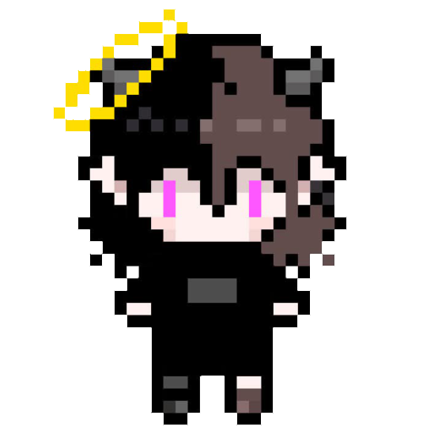
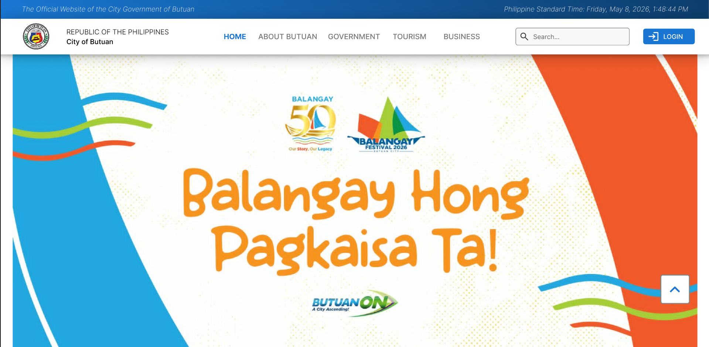
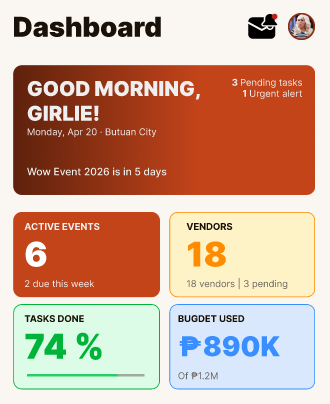
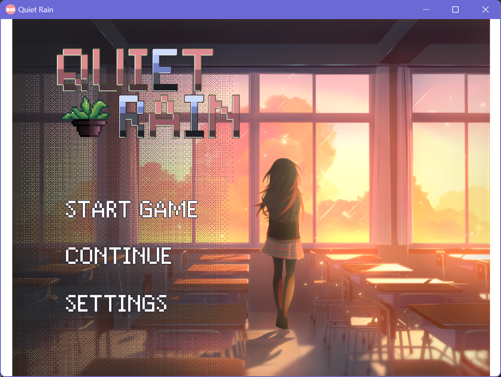

Development
- Web development (HTML, CSS, JavaScript)
- Game development
- UI/UX prototyping with Figma

BSIT Student | Freelance Digital Illustrator

I'm a 4th year Bachelor of Science in Information Technology student at Caraga State University. Alongside my studies, I work as a freelance art illustrator (art commissions), and my artist name is EnjelAshe. I apply my own art to game development, UI/UX design, and other creative projects. I have a strong interest in human-computer interaction.

A developed redesign of the Butuan City Government website for our final project for IT 101, focusing on improving user experience and accessibility. The project involved research, wireframing, and high-fidelity prototyping.
View the City Government Website Redesign
A group project prototype (most of the work is by me) for our ITE 17 final project. Our group was tasked to create a prototype for an event management system, and I took the lead in designing and developing the user interface and experience.
View the Event Management Prototype
A solo-developed visual novel game project for our IT 18 final project. I handled all aspects of the game development, including story writing, character design, programming, and testing. I developed it in a hurry since I was juggling with other school projects, but I managed to complete it on time. The game is a short visual novel that explores theme loss and connection.
View the Game Project on GitHubInterested in working together or commissioning a piece? Reach out through any of the following: